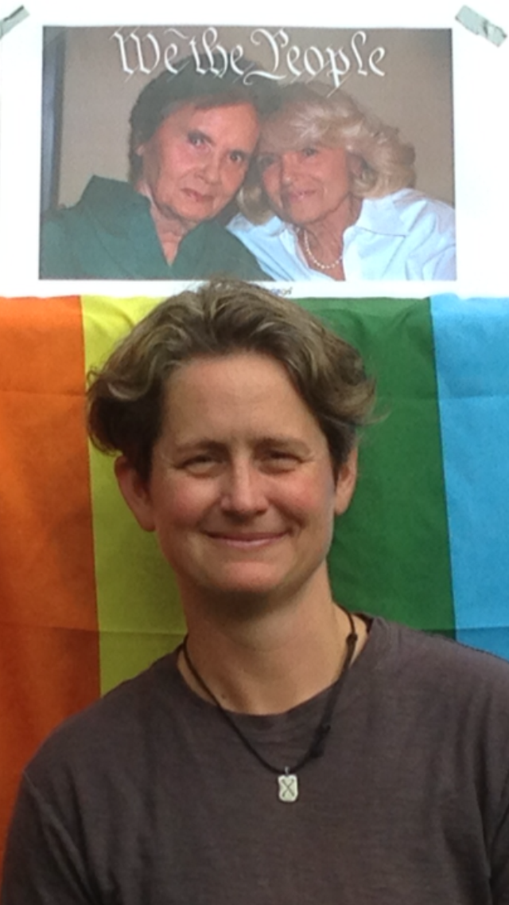

A west coast transplant from a midwest family, I came to Seattle to go
to college at UW and have been here ever since. My time on this planet
has always revolved around stepping up for my community and stepping
into a challenge. I have supervised programs for homeless youth and
young adults, helpd trained Haiti's first EMTs, led youth activites
outside London and volunteered with multiple local LGBT community
groups. Always wanting to tackle what is hard, I dedicated myself to
becoming a professional firefighter. After a 16 year career and
thousands of 911 responses, I am pivoting from asking the most of my
body to asking the most of my mind. I am honored to be a member of Ada
Developers Adcademy's Cohort 17. My dream is to use the wealth and
innovation generated by today's tech industry to improve the lives of
our under represented neighbors. When not daydreaming about improving
the planet, I have found time to road trip, camp, raise the best dogs
and nurture the most fulfilling friendships.
